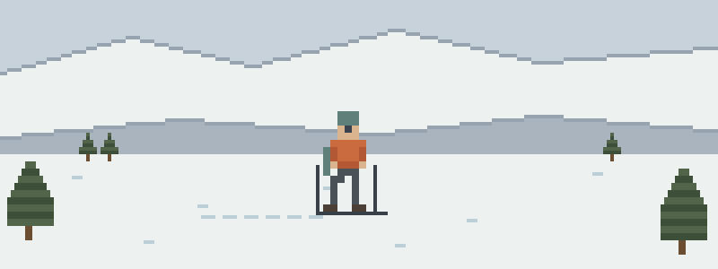

The hour after
- Out of the tree well, not out of trouble. You dug fast and he’s breathing, but the breaths come with a snore and he won’t wake up. Airway position, insulation from the snow, and a hard look at your watch: that’s the next ten minutes.
- The knee at 2:40. A binding rips out mid-turn and the knee goes with it. The trailhead is seven miles, sunset is at 4:50, and towing versus calling is arithmetic you want to have practiced somewhere warm.
- The shivering stops. Your partner’s been cold since the second transition. Now she’s quiet, clumsy, and not shivering anymore — which reads as improvement and is the opposite.
Study order for the skin track
Winter stacks its problems in a particular order — read in it:
- Cold Injuries — hypothermia is the second problem in every winter incident
- Airway & Breathing — what tree-well extraction hands you: an unresponsive patient
- Musculoskeletal Injuries — knees and shoulders end more tours than slides do
- Patient Assessment — serial vitals with gloves on, in the snow
- Evacuation — winter daylight makes every evac decision a timed exam
Then pressure-test it
Interactive scenarios — one decision at a time, tempting mistakes included, debrief at the end:
- Snoring Isn’t Sleeping — the airway call after you’ve dug someone out
- The Burrito — the wrap, in the environment it was invented for
- Two Go, One Stays — sending for help before the light runs out
The certification question, honestly. “Wilderness First Aid” isn’t a regulated credential. No government body defines what a WFA card means — it means whatever the company that printed it says it means. What counts in front of a patient is whether you can do the work. This course teaches the work, free, and issues a record of completion — not a certificate, and we won’t pretend otherwise. Avalanche education is its own house: AIARE or AST coursework and regular beacon practice with your partners — none of it optional, none of it in here. If patrol or guiding is the ambition, OEC and WFR cards come from recognized providers; this free course is the medical fluency underneath both. If nobody requires you to hold a card, what you need are the skills, not the laminate.
Skin-track questions
Does this course cover avalanche rescue?
No, and be suspicious of any first aid course that claims to. Beacon, probe, and shovel live in an avalanche course (AIARE or AST) and in regular practice with your partners. What lives here is the hour after: the airway of the person you dug out, the hypothermia that follows every winter problem, and the evacuation clock.
My partner’s out of the tree well and breathing — now what?
Listen to the breathing. A snore means the airway is partly blocked — position it now, not once help is called. Then get insulation between him and the snow, and check his level of response every few minutes. “Breathing” is a starting point, not an all-clear.
How do you spot hypothermia on a tour?
Watch the partner, not the thermometer. Clumsy transitions, unusual quiet, and the fumbled buckle are early data; shivering that stops without rewarming is worsening, not improving. Dry layers, calories, and the wrap all work best embarrassingly early.
What this is
Fifteen lessons, a 40-question knowledge check, sixteen practice scenarios, a printable field reference card, and a kit checklist. Free, no account, nothing recorded about you, source on GitHub. It teaches decision-making, not hands-on skill — practice the hands-on parts on a real, padded, complaining friend.
Other people who rope up: mountaineers & high-altitude climbers · ice climbers & mixed-terrain athletes · alpine & multi-pitch climbers